Introduction to Trees
In the world of data structures and algorithms, understanding binary trees lays the groundwork for hierarchical organisation and efficient data manipulation.
Up until now, we have studied array, linked list, stack and queues which are the fundamental linear data structures. Binary Trees are a different data structure and allow hierarchical organisation and structure of multi-level sequences. This resembles a tree with branching at each node expanding the tree in a non-linear fashion.
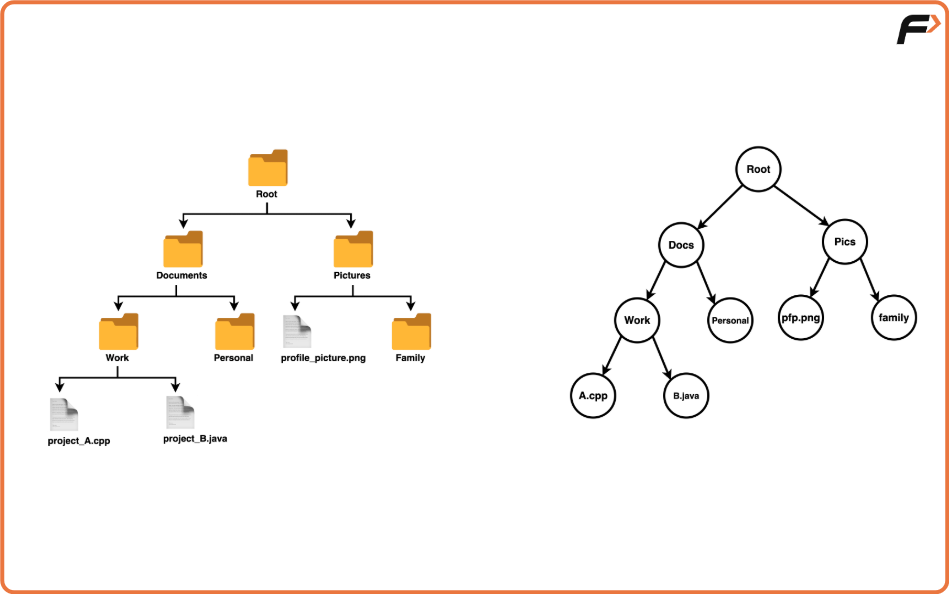
Just as the folders, subfolders and files are hierarchically arranged in your computer's file system, the binary tree has a similar structure with nodes representing folders and their children nodes representing the sub directory or files inside it.
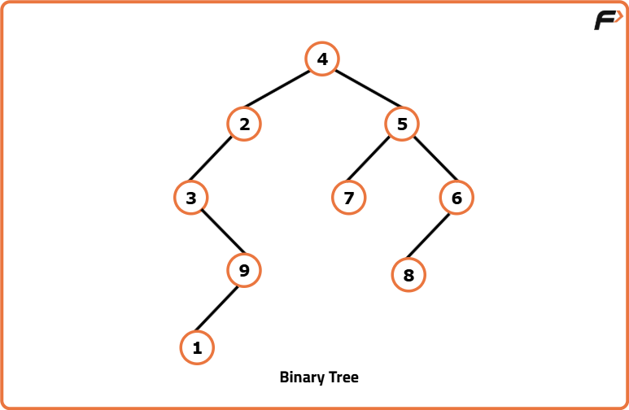
Binary Tree: Binary tree is a fundamental hierarchical data structure in computer science that comprises nodes arranged in a tree-like structure. It consists of nodes, where each node can have at most two children nodes, known as the left child and the right child.
Nodes: Each node in a binary tree contains a piece of data, often referred to as the node’s value or key. This node also contains references and pointers to its left and right children so that we can traverse from one node to another in a hierarchical order.
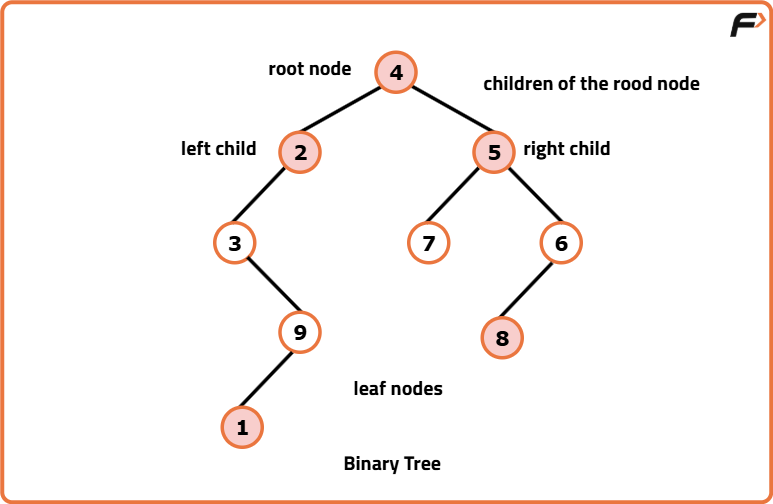
Root Node: is the topmost node of a binary tree from which all other nodes stem out. This serves as the entry point for traversing the tree structure.
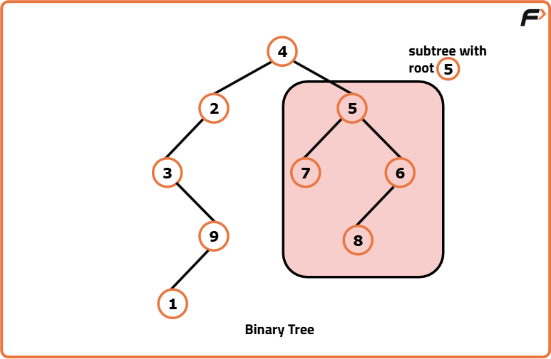
Children Nodes are the nodes directly connected to a parent node. In a binary tree, a parent node can have zero, one or two children nodes, each situated to the left or right of the parent node.
Leaf Nodes are the nodes that do not have any children. These nodes lie on the outermost ends of the tree branches and are the terminal points of the traversal.
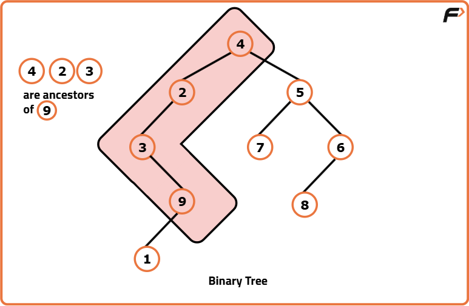
Ancestors in a Binary Tree are those nodes that lie on the path from a particular node to the root node. They are the nodes encountered while moving upwards from a specific node through its parent nodes until reaching the root of the tree.
Full Binary Tree:
A Full Binary Tree, also known as a Strict Binary Tree, adheres to the structural property where every node has either zero or two children.
No node of this tree has just a single child, all internal nodes have exactly two children or in the case of leaf nodes, no children.
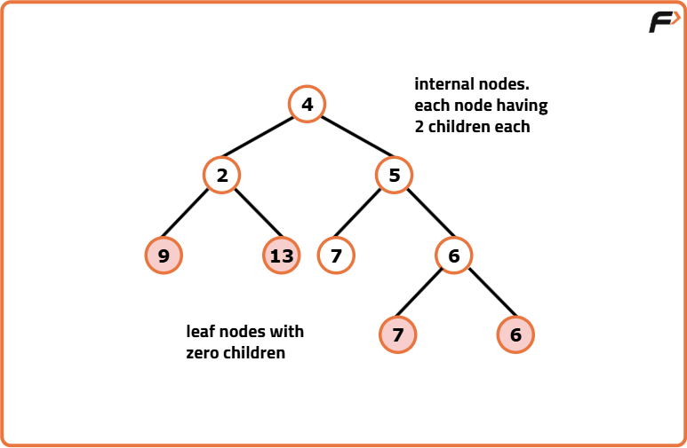
The property that each node has either 2 or 0 children contributes significantly to the tree’s balance, making traversal, searching and insertion options more predictable and efficient.
The emphasis that the internal nodes must have exactly two children optimises the tree’s space utilisation and makes it more balanced.
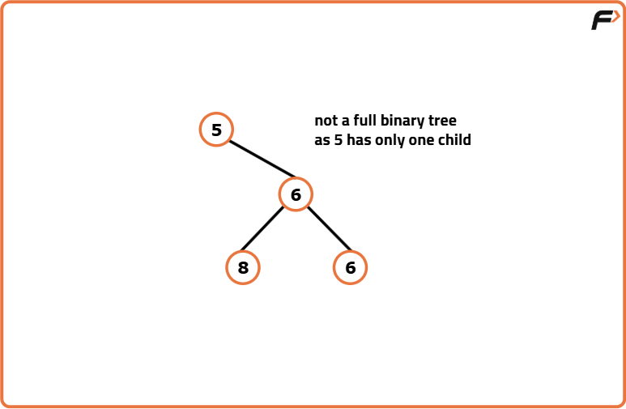
Complete Binary Tree:
A Complete Binary Tree is a specialised form of Binary Tree where all levels are filled completely except possibly the last level, which is filled from left to right.
All levels of the tree, except possibly the last one, are fully filled. If the last level is not completely filled, it is filled from left to right, ensuring that nodes are positioned as far left as possible.
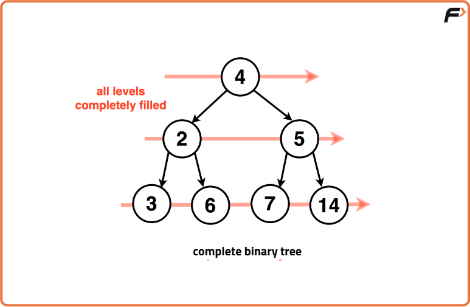
In a complete binary tree, all leaf nodes are in the last level or the second-to-last level, and they are positioned towards the leftmost side.
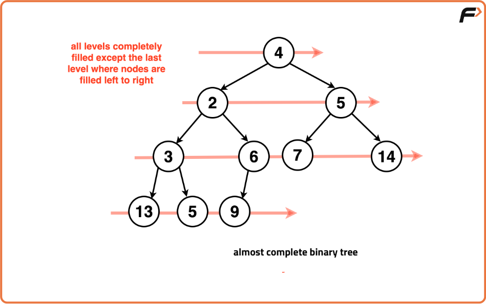
This structure is particularly useful for storing data in structures like heaps, where efficient access to the top element (root) or certain properties (e.g., maximum or minimum values in a heap) is crucial. The completeness property of a complete binary tree aids in achieving balanced structures, making it easier to implement algorithms and ensuring reasonably consistent performance.
One important aspect to note is that although it might seem similar to a full binary tree, a complete binary tree doesn't require all nodes to have two children; it's about the positioning and arrangement of nodes.
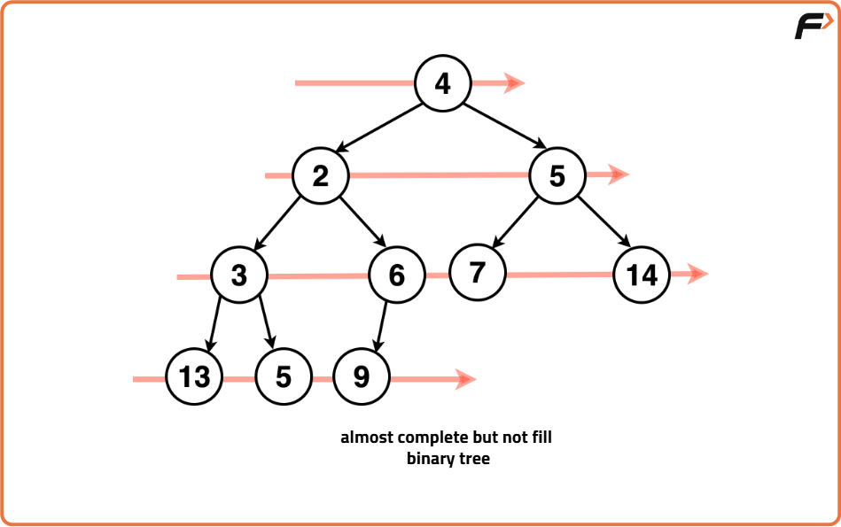
Perfect Binary Tree:
A Perfect Binary tree is a type of Binary Tree where all leaf nodes are at the same level and the number of leaf nodes is maximised for that level.
Every node in a perfect binary tree has either zero or two children. This means that every internal node (non-leaf node) has exactly two children and all leaf nodes are at the same level.
All levels of this tree are fully filled with nodes including the last level. Perfect Binary Trees have a balanced structure that maximises the number of nodes for a given height, creating a dense structure where the number of nodes doubles as we move down each level of the tree.
Properties of perfect binary trees make them efficient for certain operations like searching and sorting due to their balanced nature. However, achieving and maintaining perfect balance, especially when the number of nodes is not a power of two, might not be feasible in many practical applications.
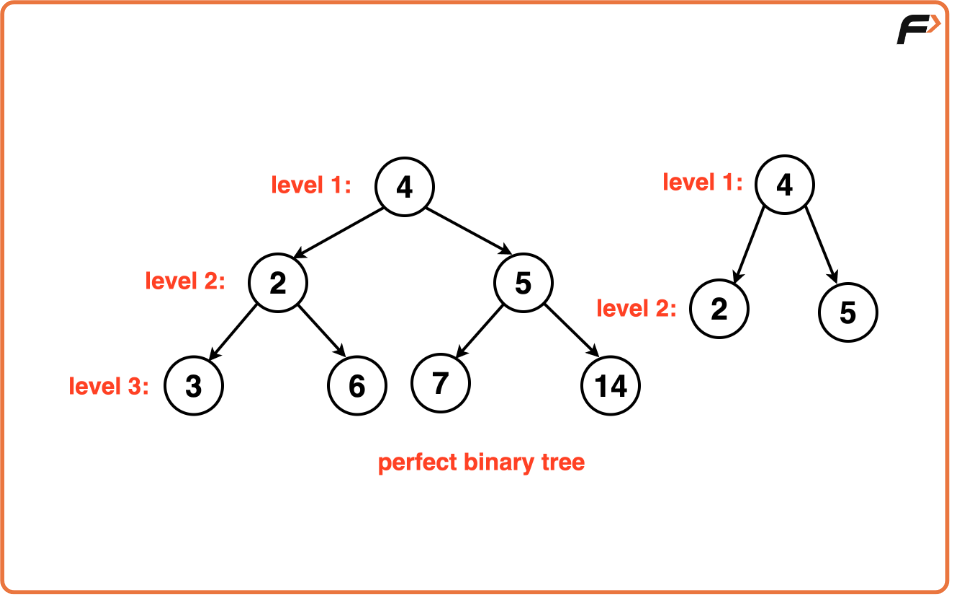
All levels of this tree are fully filled with nodes including the last level. Perfect Binary Trees have a balanced structure that maximises the number of nodes for a given height, creating a dense structure where the number of nodes doubles as we move down each level of the tree.
Properties of perfect binary trees make them efficient for certain operations like searching and sorting due to their balanced nature. However, achieving and maintaining perfect balance, especially when the number of nodes is not a power of two, might not be feasible in many practical applications.
Balanced Binary Tree:
A Balanced Binary tree is a type of Binary Tree where the heights of the two subtrees of any node differ by at most one. This property ensures that the tree remains relatively well-balanced, preventing the tree from becoming highly skewed or degenerate.
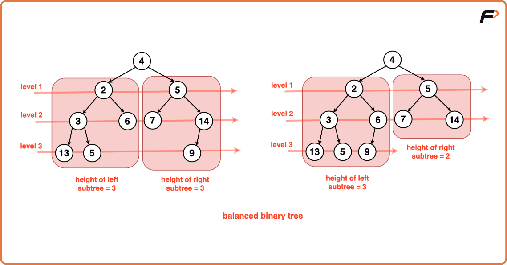
In a balanced binary tree, the height of the tree should be log2N at maximum, where N is the number of nodes. This ensures that the tree does not become heavily skewed or imbalanced. The distribution of nodes of both the left and right subtrees remains relatively even throughout the tree.
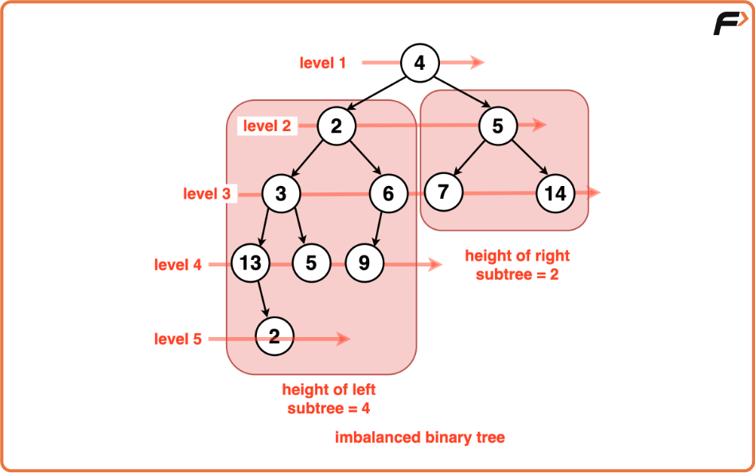
Degenerate Tree:
A Degenerate Tree is a Binary Tree where the nodes are arranged in a single path leaning to the right or left. The tree resembles a linked list in its structure where each node points to the next node in a linear fashion.
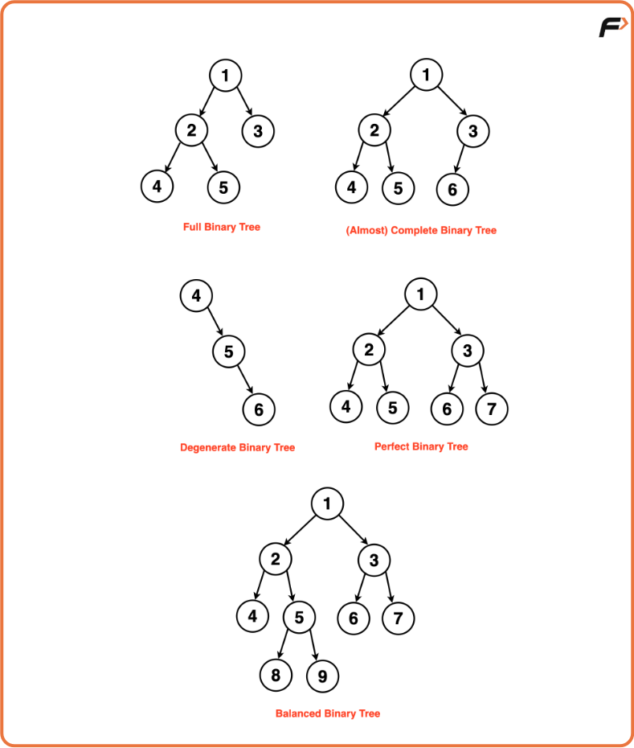
There’s a lot of imbalance in the tree structure due to the sequential arrangement of nodes. This lack of balance results in a tree that resembles a singly linked list rather than a branching structure.
Each level of this tree only has one node. The height of tree reaches ‘n’ ie. the number of nodes in the tree, resulting in inefficient search operations. Though degenerate trees are not commonly used intentionally due to their inefficient nature for most operations, they may occur inadvertently in scenarios where nodes are inserted in a specific order (e.g., always to the right or left), causing the tree to lose its balanced properties.
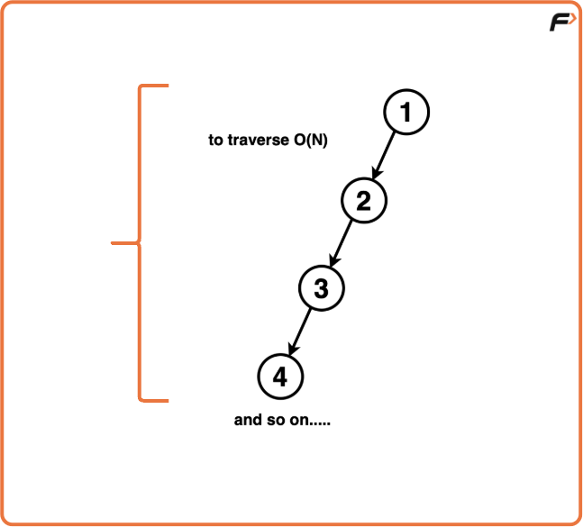
Understanding degenerate trees is essential in analysing the worst-case time complexity of algorithms in scenarios where the tree structure degrades to this linear form, as it can help in optimising algorithms for these situations.
In Summary:
In summary, Binary Trees introduce a hierarchical arrangement taking a step ahead of the linear structure we have studied so far.
Binary Trees comprise of nodes, each capable of hosting at most two children hence the predecessor ‘Binary”. These structures mirror the hierarchical oraganisation seen in file systems.
Full Binary Trees impose the constraint that each node possesses either zero or two children, promoting a well-balanced structure and enhancing predictability in operations like traversal and insertion.
Complete Binary Trees, on the other hand, embrace a specialized form where all levels, save possibly the last, are completely filled. Their design, ensuring nodes are positioned leftmost on the last level, proves valuable for efficient data storage and access, resembling the organized arrangement of folders and files in a computer system.
Perfect Binary Trees take this hierarchical order a step further, showcasing a balanced structure where all leaf nodes align at the same level. Such trees optimize space by filling all levels with nodes, creating a dense structure.
Balanced Binary Trees ensure the difference in heights between subtrees of any node remains minimal, preventing significant skewing or imbalance.
Degenerate Trees represent a case where nodes arrange linearly, akin to a linked list, posing inefficiencies in search operations due to the lack of balance.